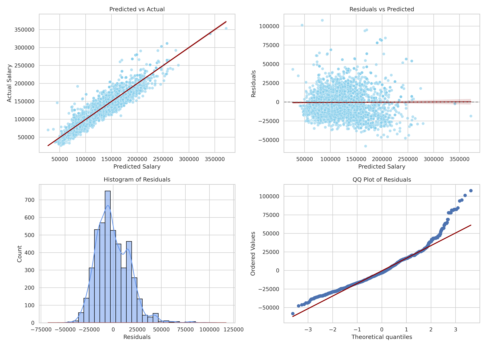
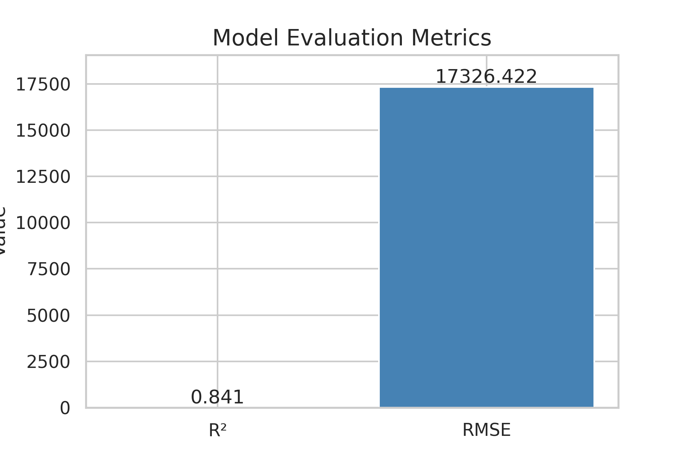
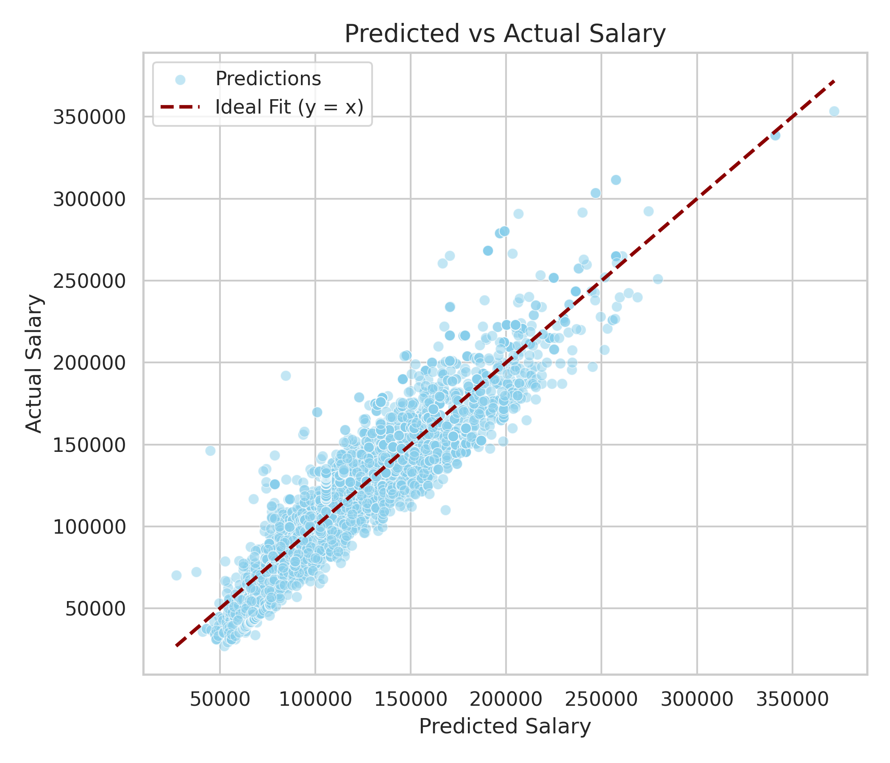

Exploring Employment Trends Using Regression Models
Regression Modeling on Employment Data
Objectives
- Use PySpark to process the Lightcast dataset.
- Engineer features from structured columns for salary prediction.
- Train Linear Regression model.
- Evaluate models using RMSE and R².
- Visualize predictions using diagnostic plots.
- Push work to GitHub and submit the repository link.
Setup
The instruction below provides you with general keywords for columns used in the lightcast file. See the data schema generated after the load dataset code above to use proper column name. For visualizations, tables, or summaries, please customize colors, fonts, and styles as appropriate to avoid a 2.5-point deduction. Also, provide a two-sentence explanation describing key insights drawn from each section’s code and outputs.
- Follow the steps below as necessary, use your best judgement in importing/installing/creating/saving files as needed.
- Create a new Jupyter Notebook in your
ad688-sp25-lab08directory namedlab08_yourname.ipynb, if the file exists make sure to change the name. - Use your EC2 instance for this lab.
- Ensure the
lightcast_data.csvfile is available on the EC2 instance. if not then Download the dataset - Add the dataset to
.gitignoreto avoid pushing large files to GitHub. Open your.gitignorefile and add: - Make sure to create a virtual environment and install the required Python libraries if needed, don’t forget to activate it:
- Install the required Python libraries if needed, you can also use the given requirement file to install the packages to the virtual environment:
python3 -m venv .venv
source .venv/bin/activate
gdown https://drive.google.com/uc?id=1V2GCHGt2dkFGqVBeoUFckU4IhUgk4ocQ
echo "lightcast_job_postings.csv" >> .gitignore
pip install -r requirements.txt1 Load the Dataset
- Load the Raw Dataset:
- Use Pyspark to the
lightcast_data.csvfile into a DataFrame: - You can reuse the previous code.
- Copying code from your friend constitutes plagiarism. DO NOT DO THIS.
- Use Pyspark to the
2 Feature Engineering
Feature Engineering is a crucial step in preparing your data for machine learning. In this lab, we will focus on the following tasks:
- Drop rows with missing values in the target variable and key features.
- By now you are already familiar with the code and the data. Based on your understanding please choose any 3 (my code output has 10) variables as:
- two continuous variables (use your best judgment!)
- one categorical.
- Your dependent variable (y) is
SALARY.
- Convert categorical variables into numerical representations using StringIndexer and OneHotEncoder.
- Assemble features into a single vector using VectorAssembler.
- Split the data into training and testing sets.
3 Train/Test Split
- Perform a random split of the data into training and testing sets.
- Set a random seed for reproducibility.
- You can choose a number for splitting to your liking, justify your choice.
The dataset was randomly split into a training set (80%) and a test set (20%) using randomSplit([0.8, 0.2], seed=688). This resulted in 18,999 records for training and 4,705 for testing, totaling 23,704 records.
4 Linear Regression
- Train a Linear Regression model using the training data. You will run in to an important issue here. Please make an effort in figuring it by yourself. This is one of the most asked interview questions in CapitalOne’s management recruiting program.
- Evaluate the model on the test data.
- Print the coefficients, intercept, R², RMSE, and MAE.
- Use the
summaryobject to extract the coefficients and their standard errors, t-values, and p-values. - Create a DataFrame to display the coefficients, standard errors, t-values, p-values, and confidence intervals.
- Interpret the coefficients and their significance and explain the model performance metrics.
The linear regression model achieved an R² score of 0.841, indicating that approximately 84.1% of the variance in the target variable (salary) is explained by the model. The RMSE of 17,326 and MAE of 13,668 show that the model has a reasonably low average error when predicting salary values.
The model has 4 coefficients, with each corresponding to a feature in the dataset. Notably: The coefficients for feature 0 and 1 are positive and statistically significant (p < 0.05), indicating a strong positive relationship with salary.The coefficients for features 2 and 3 are negative and significant, suggesting that those categorical levels (from one-hot encoding) are associated with lower expected salary.
All p-values are essentially 0, implying strong statistical significance. Confidence intervals do not cross zero, further confirming the significance of the predictors.
4.1 Generalized Linear Regression Summary
The summary of the Generalized Linear Regression model provides important insights into the model’s performance and the significance of each feature. The coefficients indicate the relationship between each feature and the target variable (salary), while the standard errors, t-values, and p-values help assess the reliability of these estimates.
- Please interpret them in the context of your data and model.
- Feature Names are purposefully not printed in the output. You can use the
featuresvariable to print them out.
MIN_YEARS_EXPERIENCE has a positive coefficient (~2683), indicating that each additional year of experience is associated with an increase in salary by about $2,683, holding other factors constant. The low p-value (0.0) confirms that this relationship is statistically significant.
SALARY_FROM also shows a strong positive relationship with the target variable. For every additional dollar in the job’s minimum posted salary, the expected final salary increases by approximately 0.95 dollars. Its extremely small standard error and very high t-value support the reliability of this estimate.
EMPLOYMENT_TYPE_0 and EMPLOYMENT_TYPE_1 (these likely represent specific job types like part-time or contract, from one-hot encoding) have negative coefficients (-9939 and -6559), meaning jobs with these types tend to have lower predicted salaries compared to the baseline type (which was not one-hot encoded). Their confidence intervals do not cross zero, and their p-values are also highly significant (<< 0.05), showing that these effects are meaningful.
5 Diagnostic Plot
Diagnostic plots are essential for evaluating the performance of regression models. In this section, we will create several diagnostic plots to assess the linear regression model’s assumptions and performance. There are four (2*2 grid) main plots we will create, you can use seaborn or matplotlib for this:
- Predicted vs Actual Plot
- Residuals vs Predicted Plot
- Histogram of Residuals
- QQ Plot of Residuals

Predicted vs Actual Plot (Top Left): The data points mostly align with the red reference line (y = x), indicating that the model predicts salaries well. The linear trend suggests a strong fit between predicted and actual values.
Residuals vs Predicted Plot (Top Right): Residuals are randomly scattered around the zero line, supporting the assumption of linearity and indicating that the model does not suffer from major systematic bias. However, there is some heteroscedasticity (increasing spread at higher predictions) which might suggest variance is not constant.
Histogram of Residuals (Bottom Left): The distribution of residuals is approximately normal, though slightly left-skewed. This supports the assumption of normally distributed errors, which is key for statistical inference validity.
QQ Plot of Residuals (Bottom Right): Most points fall along the red reference line, confirming that the residuals follow a normal distribution. Deviations in the tails may indicate mild outliers or slight non-normality at the extremes.
6 Evaluation
The evaluation of the model is crucial to understand its performance. In this section, we will calculate and visualize the following metrics: 1. R² (Coefficient of Determination): Indicates how well the model explains the variance in the target variable. 2. RMSE (Root Mean Squared Error): Measures the average magnitude of the errors between predicted and actual values.

The model achieved an R² score of 0.841, which means that approximately 84.1% of the variance in the target variable (salary) is explained by the selected features in the linear regression model. This indicates a strong fit and high explanatory power.
The RMSE is 17,326, which represents the average magnitude of the prediction errors. This means, on average, the model’s predicted salary differs from the actual salary by around $17,326.
6.1 Model Evaluation Plot
- Display the predicted vs actual salary plot with a red line indicating the ideal fit (y=x).
- Use
seabornormatplotlibto create the plot. - Customize the plot with appropriate titles, labels, and legends.
- Describe the plot in a few sentences, highlighting key insights and observations.

This plot compares the predicted salaries (x-axis) to the actual salaries (y-axis) in the test dataset. The dashed red line represents the ideal scenario where predictions perfectly match actual values.
Most data points are clustered closely around the red line, which indicates that the model has a strong ability to estimate salary. Some points deviate from the line, especially in the higher salary range, suggesting that predictions tend to slightly under- or overestimate in extreme cases.
Submission
- Save figures in the
_output/folder. - Commit and push code and output files:
git add .
git commit -m "Add Lab 08 Salary Prediction models and output"
git push origin main- Submit your GitHub repository link.